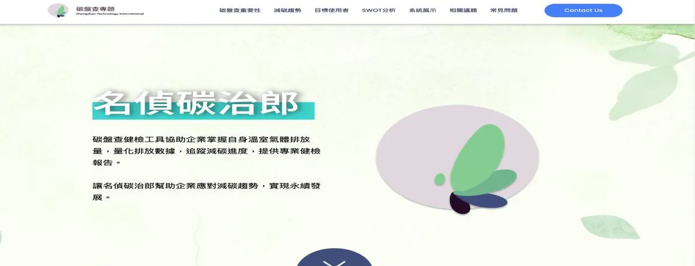
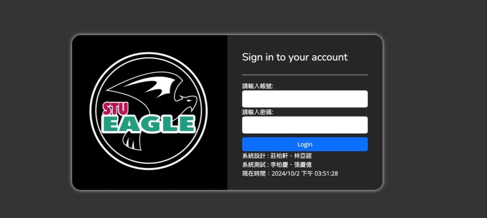
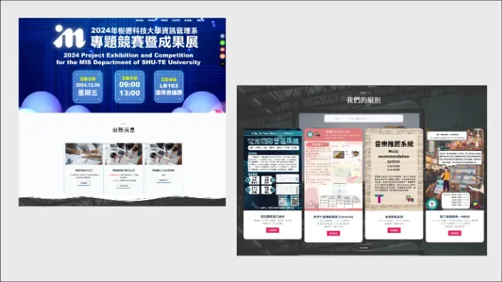
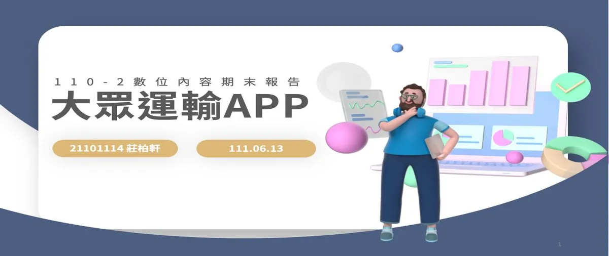

All Works
全部作品・共 26 項
系統開發
從資料庫設計、後端 API 到 AI 串接與影像辨識，實習與專題中完成的系統。
系統開發ASKY：AI 共同協作平台AI 應用・實習專案
系統開發智慧物聯網設備人流碳盤查系統影像辨識・研究機構實習

系統開發名偵碳治郎：碳盤查健檢工具系統企業系統・實習專案
系統開發電競戰隊管理系統專題作品網站與介面
系所與活動網站的架設、版面設計，以及 APP 介面改版。
 網站與介面新南向合作產學國際專班網站WordPress・形象網站
網站與介面電腦與通訊系系所網站WordPress・系所網站
網站與介面新南向合作產學國際專班網站WordPress・形象網站
網站與介面電腦與通訊系系所網站WordPress・系所網站

網站與介面2024 專題競賽暨成果展官網WordPress・活動官網
網站與介面大眾運輸 APP 介面重新設計UI/UX・課程專案影音製作
招生節目、營隊活動、線上課程與社團活動的拍攝與剪輯。
 影音製作招生宣傳節目「JJ 來說書」影片剪輯・招生宣傳
影音製作招生宣傳節目「JJ 來說書」影片剪輯・招生宣傳
 影音製作2023 資管系冬令營活動精華活動紀錄・影片剪輯
影音製作2023 資管系冬令營活動精華活動紀錄・影片剪輯
 影音製作LINE OA 商店聊天機器人磨課師線上課程・影片剪輯
影音製作LINE OA 商店聊天機器人磨課師線上課程・影片剪輯
 影音製作2023 速度與「機」情 無人機競賽活動紀錄・影片剪輯
影音製作2023 速度與「機」情 無人機競賽活動紀錄・影片剪輯
技術文件
把系統架構與操作流程整理成可以開發、維護與交接的文件。
圖文設計
招生文宣、活動海報與節慶賀圖，點進去看完整作品。


About Me
關於我
我是 莊柏軒，專注於後端系統與 AI 應用開發，
也負責網站改版與影音拍攝剪輯。
期待與您一起，把想法變成真正能用的產品。
- C#
- ASP.NET
- Laravel
- Python
- Flask
- MySQL
- YOLOv8
- WordPress
- Premiere
Contact
聯絡我